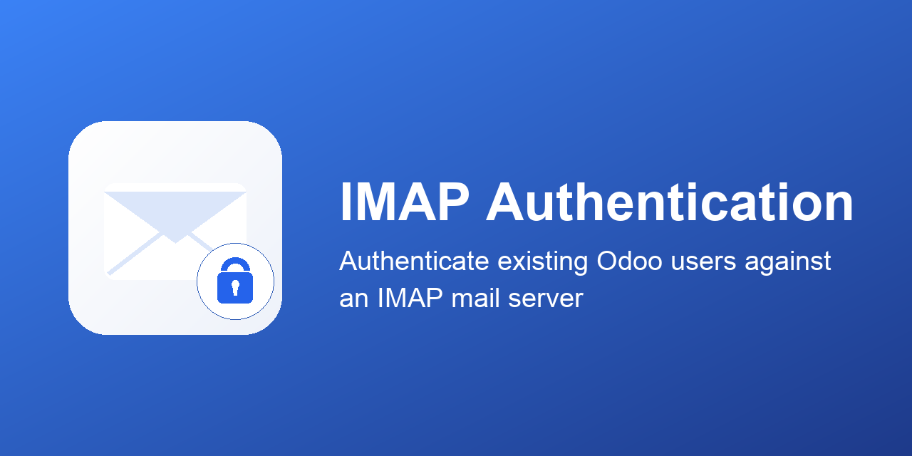

Lets existing Odoo users log in with their mailbox password, by
authenticating against an IMAP server (LOGIN)
— the same mail server password they already use, instead
of (or as a fallback to) a separate Odoo password.
Mirrors the structure of core's own auth_ldap
module: a user's local Odoo password is checked first, and only
on failure does Odoo fall back to an IMAP login with the
submitted credentials. An admin account (or anyone who still has
a local password set) is never locked out just because the mail
server is unreachable.
Unlike auth_ldap, this module does not
create new Odoo users. IMAP only authenticates users who already
have an Odoo account, matched by login.
Use the Convert to IMAP Authentication action on a user record to clear their local Odoo password, so every future login for them falls through to the IMAP check.
No extra Python packages required: uses imaplib from
the Python standard library. IMAP host, port and SSL settings are
configured per company.
Licensed under LGPL-3.